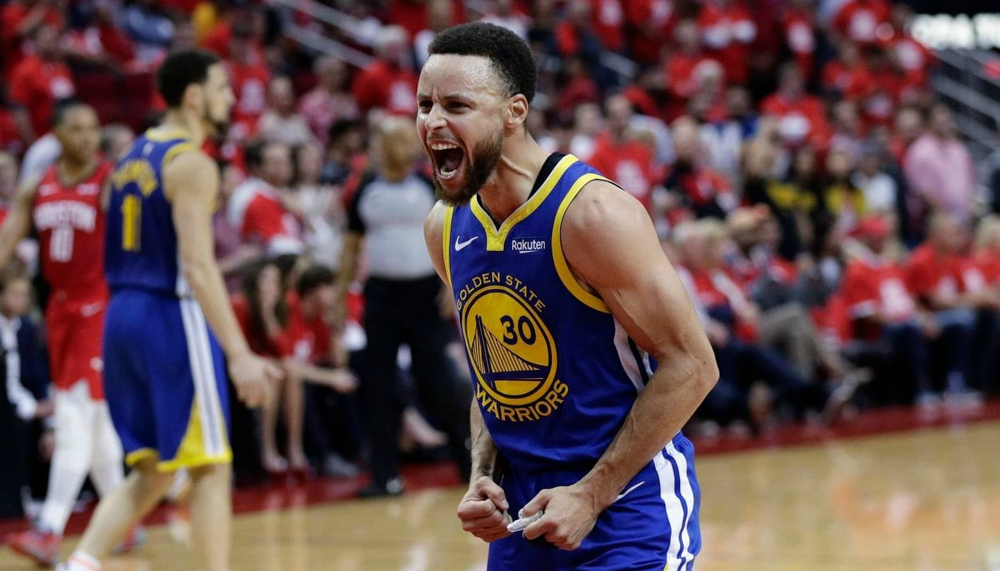

Curry fue drafteado en los Golden State Warriors donde ha llevado a la franquicia a ganar 3 campeonatos de la NBA. Donde se ha convertido en un icono para la ciudad de la Bahía de San Francisco.
Mejores Jugadas 15/16
Un recital de las mejores jugadas del año que se proclamó MVP de la NBA. Una de sus mejores actuacciones en lo que lleva de su carrera.
Campeón NBA
2014/2015, en este año Stephen Curry conseguiría su primer anillo de la NBA y llevandose con él el MVP de las finales, derrotando a Cleveland Cavaliers guiados por LeBron James.

MVP unánime
En la temporada 15/16 Stephen Curry haría una temporada de ensueño, con unos números de uno de los mejores tiradores de toda la historia. Consigió llevar a su equipo al récord de 73-9.